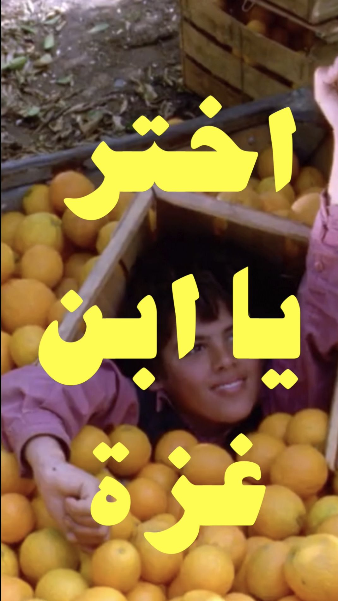
اخترْ يا ابنَ غزّة
قصيدة مهداة إلى يحيى محمود، بخلفية لقطات من فيلم حكاية الجواهر الثلاثة

قصيدة مهداة إلى يحيى محمود، بخلفية لقطات من فيلم حكاية الجواهر الثلاثة

عن نظرة المجتمع العربي تجاه الجنس.
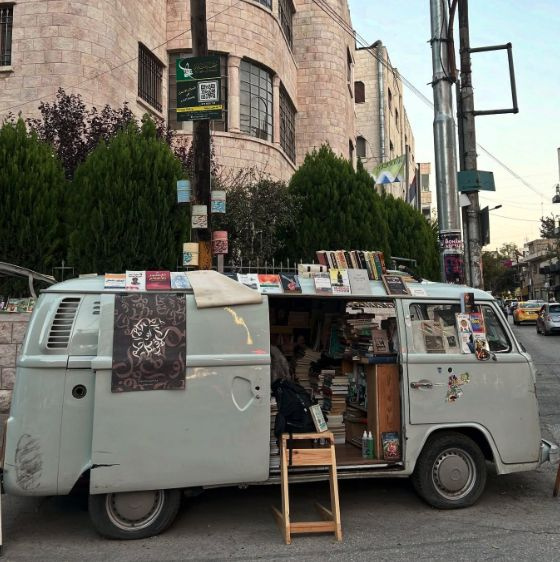
عن المكتبة الشهيرة في عمان
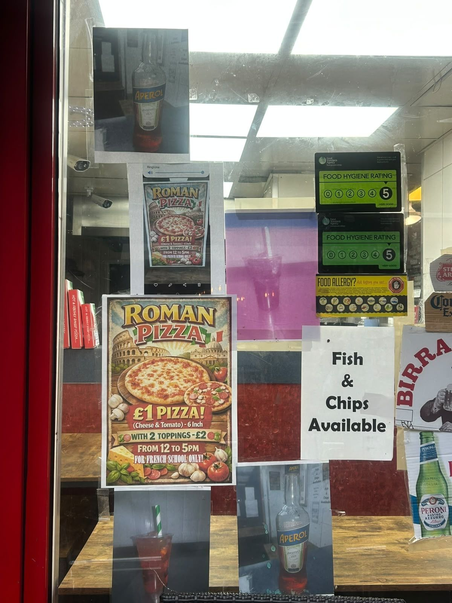
عن غياب السخط على الذكاء الاصطناعي في العالم العربي
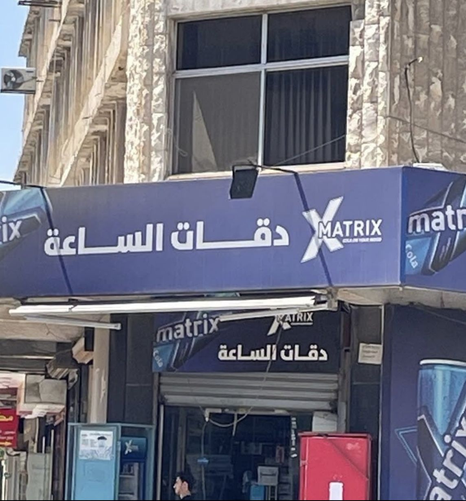
عن التحوّل التجاري في ثقافة عمّان.
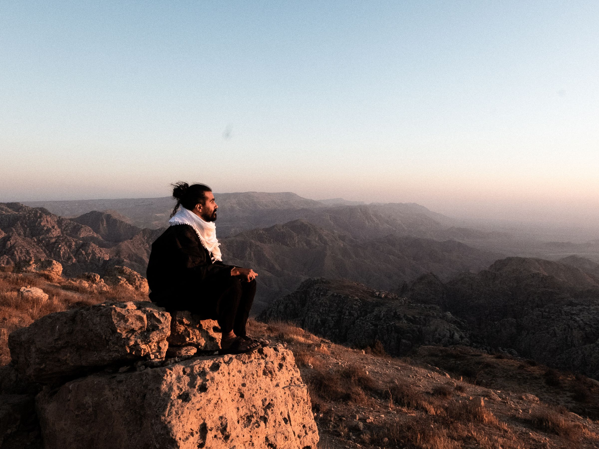
العزلة لها قيمة.
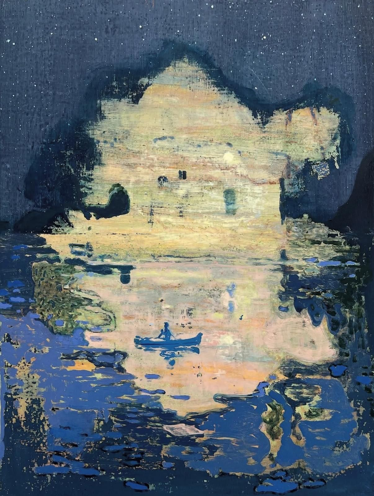
إمتى كانت آخر مرة صحيت ورقصت بهدوء مع التلج؟
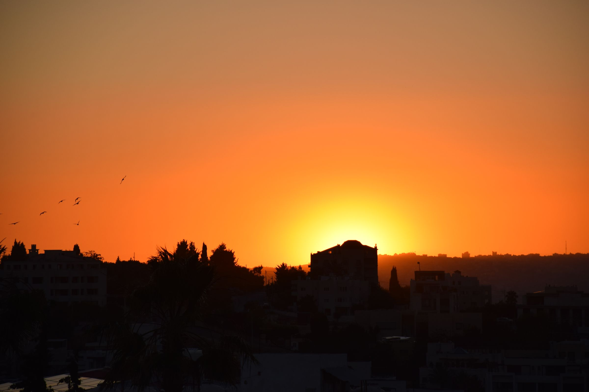
تعريف الحب هو اختزاله.

بتعمل ضجة يا غالي
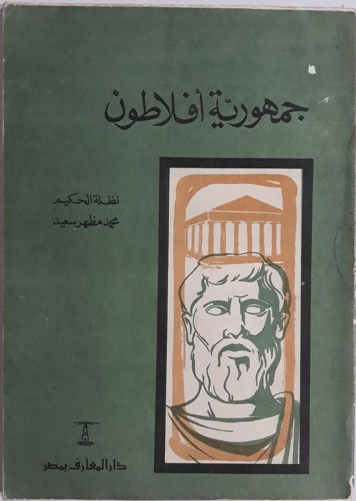
عن قيمة العلوم الإنسانية "العديمة الفائدة"...
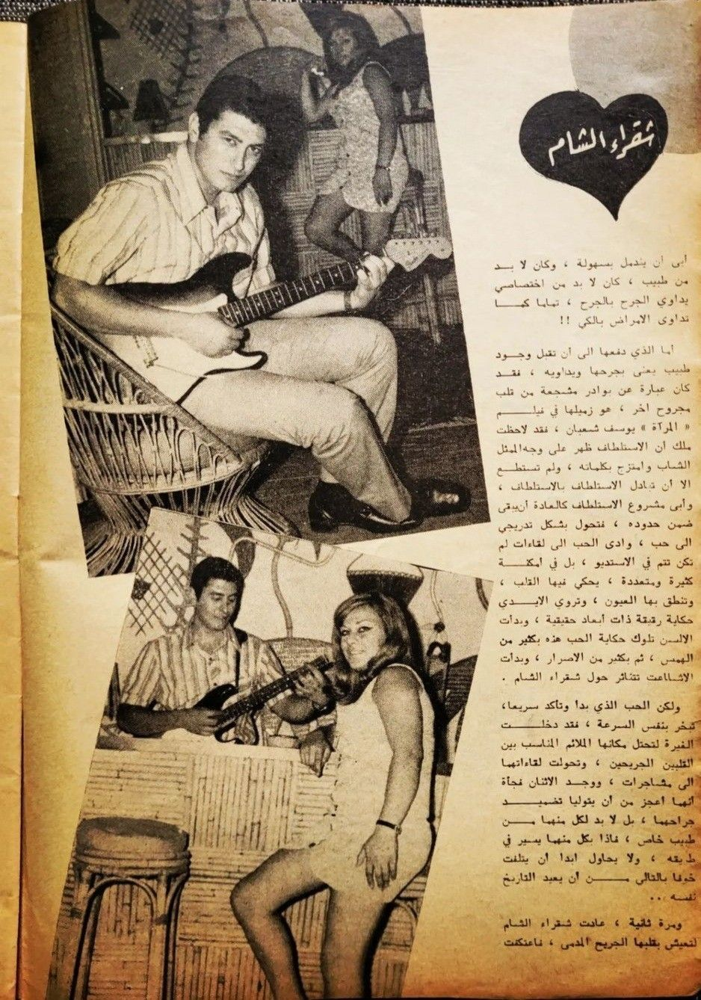
السؤال غبي؟
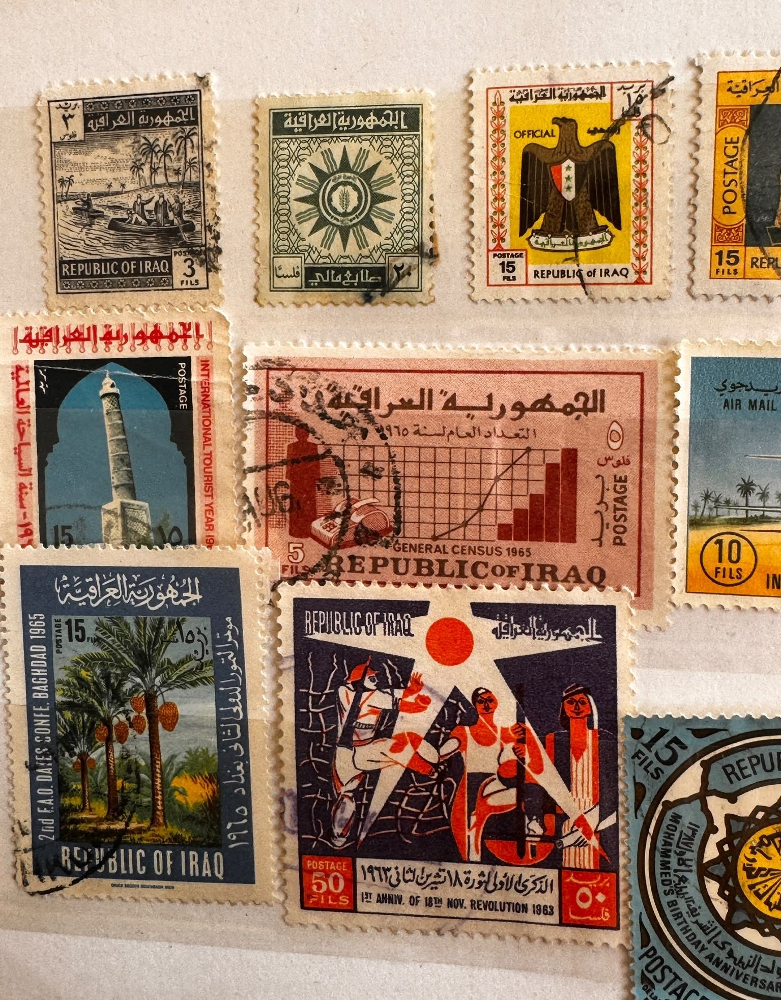
إذن أني منو و شنو؟
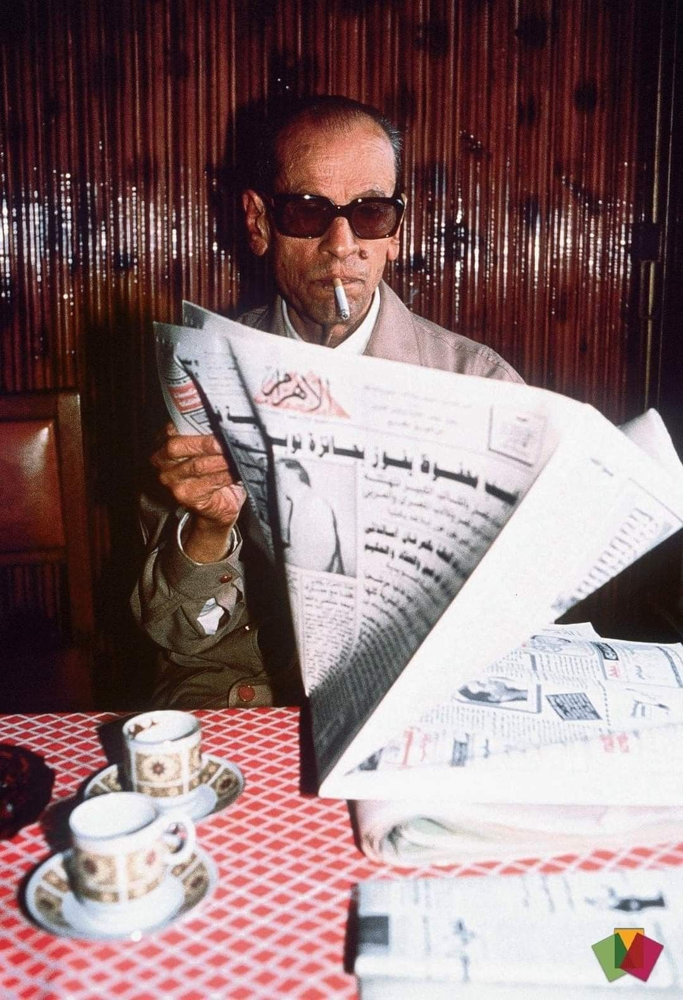
"التنظيم لا يختلف عن التلقائية"
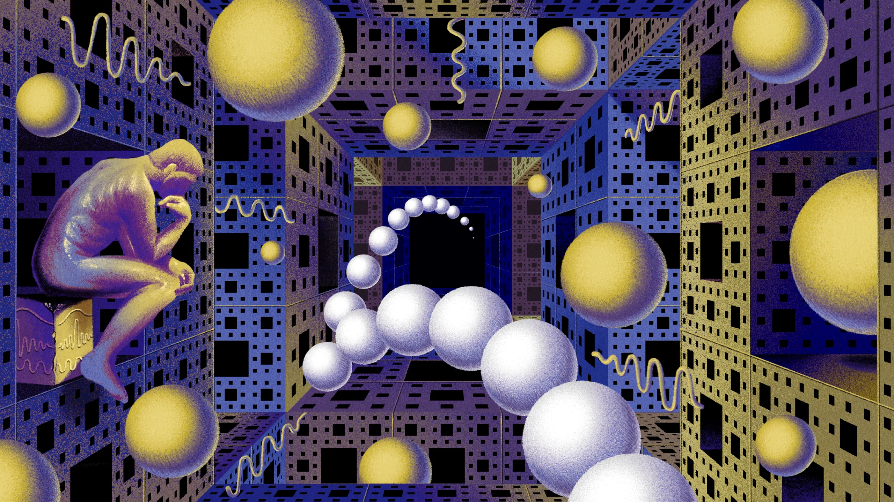
مخاوفي الوجودية
عن نظرة المجتمع العربي تجاه الجنس.
عن المكتبة الشهيرة في عمان
عن غياب السخط على الذكاء الاصطناعي في العالم العربي
عن التحوّل التجاري في ثقافة عمّان.
العزلة لها قيمة.
تعريف الحب هو اختزاله.
الآلة تبارك للآلة
عن قيمة العلوم الإنسانية "العديمة الفائدة"...
السؤال غبي؟
إذن أني منو و شنو؟
"التنظيم لا يختلف عن التلقائية"
باتمان فرع عبدون
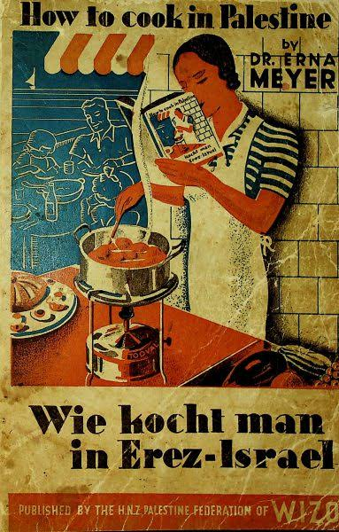
يعيش حزب الشاورما العربي
قصيدة مهداة إلى يحيى محمود، بخلفية لقطات من فيلم حكاية الجواهر الثلاثة
عن المكتبة الشهيرة في عمان
إمتى كانت آخر مرة صحيت ورقصت بهدوء مع التلج؟
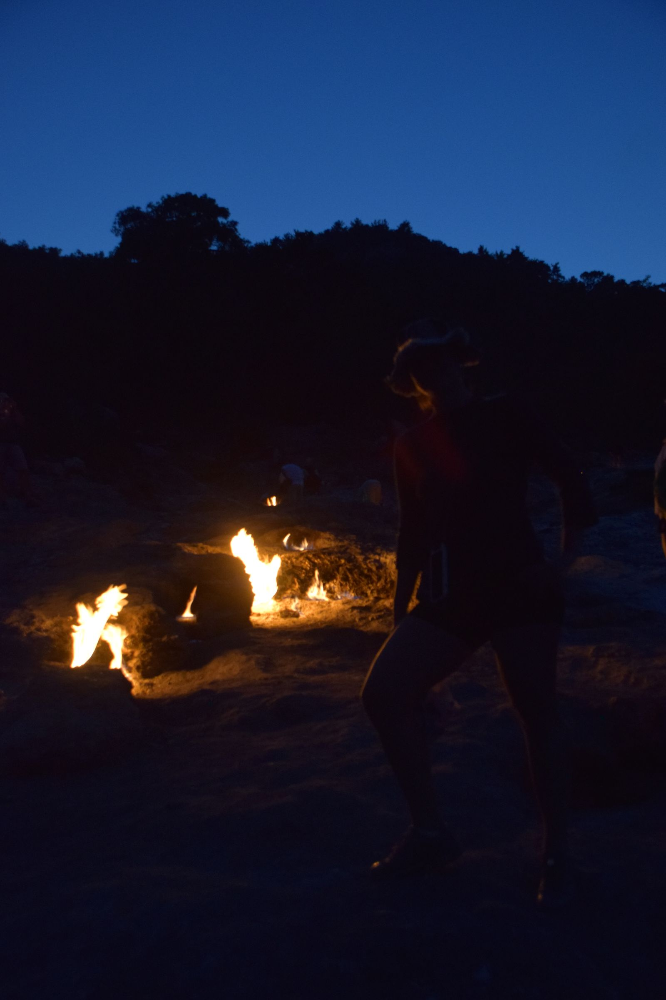
بدها جهد
بتعمل ضجة يا غالي
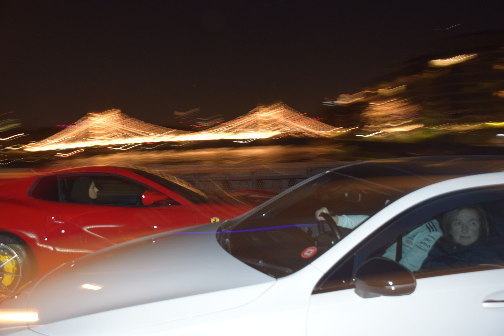
اسمه نهر التمز

ولك ليش زعلان؟